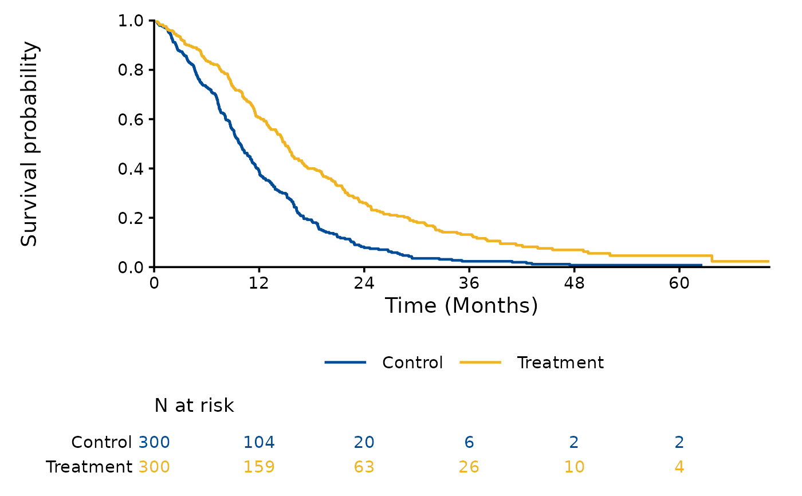
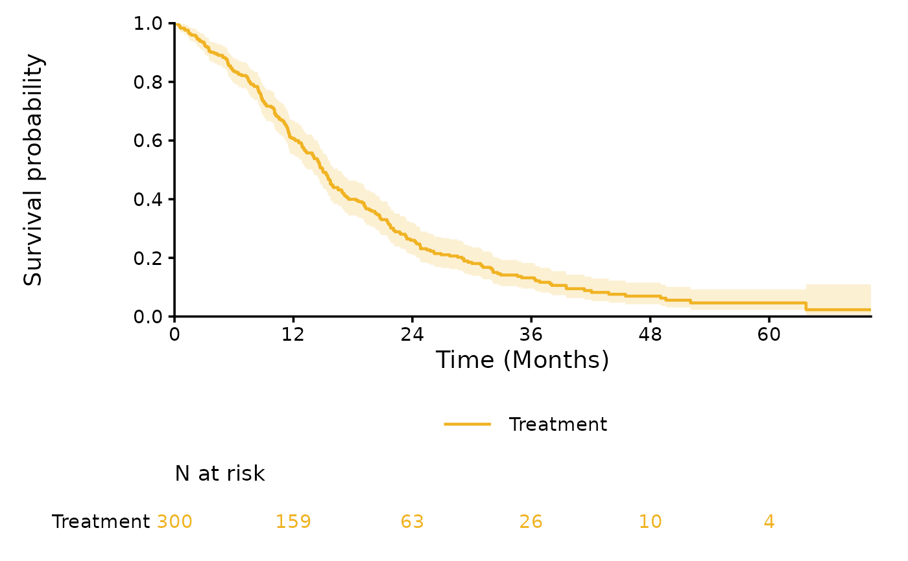

Plots the Kaplan-Meier curve of each selected arm, with or without pointwise confidence bands, and the numbers at risk below the plot. Each curve ends at the largest observed time of its arm, and the axes start at (0, 0).
Usage
plot_km(
data,
arms = NULL,
conf_int = FALSE,
conf_level = 0.95,
risk_table = TRUE,
time_unit = c("months", "days", "weeks", "years"),
y_label = "Survival probability",
break_by = NULL
)Arguments
- data
Data frame returned by
processing_dataset.- arms
NULL(the default, all arms in one plot) or the arms to plot, for example a single arm.- conf_int
Logical;
TRUEadds the pointwise confidence bands (log transformation, as inkm_table). The default isFALSE.- conf_level
Confidence level, a single number in (0, 1). The default is 0.95.
- risk_table
Logical;
TRUE(the default) adds the numbers at risk at the breaks of the time axis.- time_unit
Time unit of the data, for the label of the time axis and the spacing of its breaks:
"months"(the default),"days","weeks"or"years".- y_label
Label of the y axis, for example
"Overall survival". The default is"Survival probability".- break_by
NULL(the default, chosen from usual intervals of the time unit) or the spacing of the breaks of the time axis.
Value
A ggplot object, or with risk_table = TRUE a patchwork
object whose first element is the plot and second the table.
Examples
dat <- processing_dataset(
system.file("extdata", "fit_example.csv", package = "SurvFitSummary"),
column_arm = "TRT01P", column_survtime = "AVAL", column_cnsr = "CNSR",
control_arm = "Control"
)
plot_km(dat)

plot_km(dat, arms = "Treatment", conf_int = TRUE)
